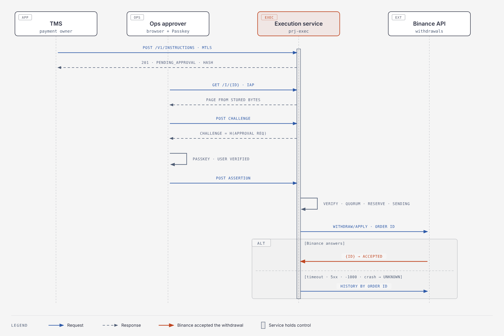
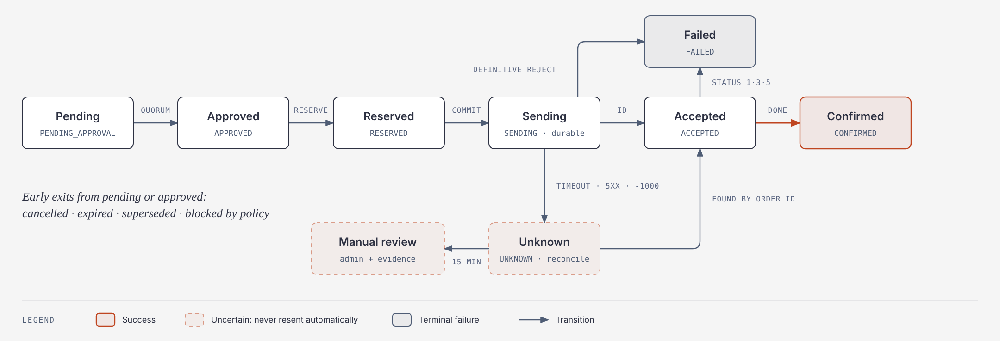

This specification tells engineering exactly what to build so that Binance funding requests run only through a dedicated execution service that verifies ops Passkey approvals itself. Every requirement in "Refactor the Binance sending process" maps to a design element and a test below. Infrastructure (projects, network, IAM) is in Platform Design v2; this document covers the service.
Scope: the execution service (internal API, approval UI, WebAuthn verifier, policy engine, executor, reconciliation worker, audit writer, admin UI), its database, its Binance client, the TMS changes, and removal of the old path. Out of scope: TMS business logic, Binance account setup beyond API keys and whitelists.
Terms: instruction = immutable payment order with a version; approval request = instruction hash plus nonce, expiry, operator; approval = verified WebAuthn assertion over one approval request; execution = the single Binance attempt for a payment UUID.
| ID | Requirement (source section) | Design element (this spec) | Verified by |
|---|---|---|---|
| R1.1 | Approval covers an immutable instruction with all listed fields (1) | Payment instruction schema | T-CAN-01..06, AT-01 |
| R1.2 | Deterministic serialization; any change voids approvals (1) | RFC 8785 canonicalization, versioning | T-CAN-07, AT-01 |
| R2.1 | Service creates the challenge bound to the instruction hash (2) | WebAuthn → challenge derivation | T-WA-01 |
| R2.2 | Service verifies challenge, origin, RP ID, signature, UV, operator authorization (2) | WebAuthn → verification algorithm | T-WA-02..09 |
| R2.3 | No trust in an "approved" flag; execute the stored instruction, not a mutable record (2) | Internal API (no approval fields), executor reads canonical_json only |
AT-08, T-EXE-03 |
| R3.1 | Exact details shown before approval, on a separate origin in the trust boundary (3) | Approval screen specification | T-UI-01..05 |
| R4.1 | Approvals expire and are single use (4) | Challenge table, consume-once update | AT-02, AT-03 |
| R4.2 | Atomic reservation, durable state (4) | State machine, executions primary key |
AT-05, T-EXE-01..02 |
| R4.3 | Duplicate protection by payment UUID across retries, concurrency, multiple approvals (4) | executions.tms_payment_uuid PK, reserve guard |
AT-05, T-EXE-05 |
| R4.4 | Reconcile uncertain outcomes; timeout ≠ failure (4) | Binance integration → reconciliation | AT-09, AT-10 |
| R5.1 | Only this service accesses Binance credentials; old paths removed, keys rotated (5) | Security checklist SC-01..06, SC-19, SC-21; work breakdown E9 | SEC-01..03 |
| R5.2 | Narrow authenticated API; no arbitrary endpoints or forwarding (5) | Internal API, fixed Binance endpoint allowlist | T-API-05, SEC-04 |
| R5.3 | Policy: accounts, destinations, limits, thresholds, dual approval by distinct operators (5) | Policy specification | AT-06, AT-07, T-POL-01..08 |
| R5.4 | Minimal network, dependencies, runtime permissions, key permissions (5) | Security checklist SC-07..14 | SEC-05..08 |
| R6.1 | Passkey enrollment, replacement, recovery, role changes via a separate audited process (6) | Passkey and approver administration | T-ADM-01..05 |
| R6.2 | Production deploy and policy changes under your control; builds have no prod credentials (6) | Build, deploy and configuration management | SEC-09..10 |
| R7.1 | Audit of instruction, hash, approvers, times, verification, policy, attempts, Binance refs; no secrets (7) | Audit events | T-AUD-01..04 |
| R7.2 | Audit stored off the execution server with restricted modification (7) | Locked bucket in prj-audit, hash chain |
T-AUD-05, SEC-11 |
| AC-1 | Reject modified details after approval | Versioning + hash check at verify and reserve | AT-01 |
| AC-2 | Reject expired, replayed, unauthorized approvals | Challenge TTL, consume-once, operator check | AT-02, AT-03, AT-04 |
| AC-3 | Reject duplicate or concurrent execution | Reserve guard + PK | AT-05 |
| AC-4 | Reject threshold or policy bypass | Policy at create, quorum, re-check at reserve | AT-06, AT-07 |
| AC-5 | Reject backend requests carrying only an approval flag | Strict request schema, no approval endpoint for TMS | AT-08 |
| AC-6 | Safe recovery after timeout or restart without blind resend | SENDING written before call; reconciliation |
AT-09, AT-10 |
AT-11 (approval forged in the database), AT-12 (daily-limit race) and AT-13 (revocation and two-person rule) additionally cover AC-2, AC-3 and AC-4 and requirements R5.3 and R6.1.
TMS decides what should be paid; the execution service decides whether it may be paid and is the only thing that can pay it.
| Actor | Owns | Must never |
|---|---|---|
| TMS / main backend | Business payment request, its UUID, business status shown to users | Hold Binance credentials, call Binance, mark anything approved, modify an instruction after submit |
| Execution service | Instruction store, approvals, policy decisions, execution state, Binance calls, audit records | Accept approval state from callers, forward arbitrary requests, log secrets |
| Ops approver | Reviewing and approving instructions with their Passkey | Approve from any screen other than approve.<domain>; share or export Passkeys |
| You (service owner) | Production deploys, policy changes, approver roster and manual failure decisions (each together with the security officer under the two-person rule), Binance key creation and rotation, break-glass | Share break-glass credentials; approve your own policy change without review (use a second reviewer where possible) |
| Binance | Settlement | — |
POST /v1/instructions to the execution service.instruction_id, version and instruction_hash against the payment.GET /v1/instructions/{id} (poll every 10 s while not terminal, then stop). Map states: CONFIRMED → paid; FAILED, EXPIRED, CANCELLED, BLOCKED_BY_POLICY → not paid (a new version may be submitted); SUPERSEDED → follow the newer version; PENDING_APPROVAL, APPROVED, RESERVED, SENDING, ACCEPTED → in progress; UNKNOWN, MANUAL_REVIEW → pending, show "being verified".tms_payment_uuid and version + 1; the service supersedes older versions that are not yet reserved.The service runs as three processes, each with its own service account and database role, so that a bug in the internet-facing code cannot reach the Binance key, and the code holding the key accepts no inbound connections.
| Process | Listens on | Service account | Can access | Cannot access |
|---|---|---|---|---|
exec-web |
Internal API (PSC, mTLS) and approval UI (approve.<domain>) |
sa-exec-web |
DB role exec_web; mTLS keys |
Binance secret, admin tables |
exec-worker |
Nothing (no inbound port except a local health endpoint) | sa-exec-worker |
DB role exec_worker; Binance secret; audit bucket (create only); Binance API egress |
Approval UI, admin tables |
exec-admin |
Admin UI on exec-admin.<domain> (separate hostname, separate LB backend, IAP limited to admins) |
sa-exec-admin |
DB role exec_admin |
Binance secret, approvals insert, credentials insert |
This refines the single "execution service" box in Platform Design v2: exec-web, exec-worker and exec-admin run in three separate instance groups (mig-exec-web, mig-exec-worker, mig-exec-admin), so each VM carries only its own service account.
Ops approve a hash of the exact stored instruction; the service verifies it, reserves the payment, sends one request to Binance, and reconciles by order ID whenever the outcome is uncertain.

After ACCEPTED, the reconciliation worker polls withdrawal history until Binance reports a final status, and TMS reads the result through GET /v1/instructions/{id}. With dual approval, steps from "GET /i/{id}" to "POST assertion" happen once per approver.
An instruction is a flat JSON object whose canonical bytes are hashed once at creation and never change; every approval and the executor work from those stored bytes.
binance-exec/instruction/v1)| Field | Type | Validation | Notes |
|---|---|---|---|
schema |
string | equals binance-exec/instruction/v1 |
Set by the service |
tms_payment_uuid |
string | lowercase RFC 4122 UUID | Duplicate-protection key |
version |
integer | ≥ 1; equals previous max + 1 for this UUID | New version supersedes older unreserved ones |
operation |
string | in policy operations |
WITHDRAW initially |
source_account |
string | in policy source_accounts |
Logical name chosen by TMS |
binance_account_id |
string | resolved by the service from policy at create time | Set by the service; the actual Binance account that pays. Approval covers it |
wallet_type |
integer | 0 (spot) or 1 (funding), resolved from policy at create time |
Set by the service; sent to Binance as walletType. Approval covers it |
asset |
string | ^[A-Z0-9]{2,15}$, in policy for that account |
|
amount |
string | canonical decimal (rules below); > 0; scale ≤ asset precision in policy | Never a JSON number |
beneficiary_address |
string | 1–128 printable ASCII, no whitespace; matches the network's address regex in policy | Leading/trailing space is rejected, not trimmed |
network |
string | in policy for that asset | Binance network code |
memo |
string | "" or 1–128 printable ASCII; required when the network's policy says memo_required: true |
Always present |
environment |
string | equals the service's configured environment | Set by the service |
service_id |
string | equals binance-exec |
Set by the service |
Unknown fields are rejected (additionalProperties: false). TMS supplies tms_payment_uuid, version, operation, source_account, asset, amount, beneficiary_address, network, memo, and optionally tms_creator_id (stored next to the instruction, not in the canonical bytes, and advisory only because TMS controls it). The service sets the rest. There is no timestamp inside the canonical bytes, so an identical retry produces identical bytes; created_at is a database column.
At reserve time the executor resolves source_account against the current policy again; if binance_account_id or wallet_type would differ, the instruction goes to BLOCKED_BY_POLICY and needs a new version.
^(0|[1-9][0-9]*)(\.[0-9]*[1-9])?$."1250.5" valid; "1250.50", "01250.5", "1.25e3", "1250." rejected with invalid_amount. Rejection (not normalization) means TMS and the service can never disagree on the value.instruction_hash = SHA-256(utf8(canonical_json)), stored as 32 bytes, shown as lowercase hex.canonical_json bytes as received from the canonicalizer. Never re-serialize from parsed fields for hashing or execution.binance-exec/approval-request/v1)Created by the service for one operator and one instruction version when they press Approve.
| Field | Value |
|---|---|
schema |
binance-exec/approval-request/v1 |
instruction_hash |
Hex hash of the instruction being approved |
operator_id |
Approver's stable ID |
approval_nonce |
32 bytes from a CSPRNG, base64url without padding |
approval_expires_at |
Now + 300 s, RFC 3339 UTC |
environment, service_id |
As in the instruction |
rp_id |
approve.<domain> |
challenge = SHA-256(utf8(canonical(approval_request))), passed to WebAuthn as the 32-byte challenge.
Instruction (example values; the address is not real):
{"amount":"1250.5","asset":"USDT","beneficiary_address":"TQ5uGkqQxVq4wJm8mR2s7cH9yK3pLx1aBz","binance_account_id":"funding-main-01","environment":"prod","memo":"","network":"TRX","operation":"WITHDRAW","schema":"binance-exec/instruction/v1","service_id":"binance-exec","source_account":"binance-main","tms_payment_uuid":"7d1f2c9e-4b3a-4c1e-9f55-2a6b8e0d1c42","version":1,"wallet_type":1}
instruction_hash = 7a697f34fc44c53ca2e3c9a61daa56147e85b211721c3ff0cc6d26e2276ee26c
Approval request:
{"approval_expires_at":"2026-10-30T03:20:00Z","approval_nonce":"q3Vh2m0x0yZQ8rJ3pYb5sN1c7dE4fG6hK9iL2mN4oP8","environment":"prod","instruction_hash":"7a697f34fc44c53ca2e3c9a61daa56147e85b211721c3ff0cc6d26e2276ee26c","operator_id":"op-0007","rp_id":"approve.example.com","schema":"binance-exec/approval-request/v1","service_id":"binance-exec"}
challenge = 052a7a1285c0b42538c1b6136f2980c9c9d94886bed953b6cb99f7b5a1d950e8 (base64url BSp6EoXAtCU4wbYTbymAycnZSIa-2VO2y5n3taHZUOg)
The same instruction with "amount":"1250.50" must be rejected at validation; if a bug let it through, its hash (efc00e9e…) would differ, so existing approvals would not match. Ship these vectors as fixtures in the canonicalizer tests (T-CAN-01..07).
TMS can create, read and cancel instructions over mTLS on the PSC endpoint, and nothing else; there is no way to send approval state.
Transport: HTTPS on 10.10.2.50:8443 (PSC). TLS 1.3 only. Client certificate required, issued by the private CA in prj-exec, subject CN=tms-prod; the service checks the certificate's SPIFFE-style URI SAN spiffe://<domain>/tms against an allowlist. Requests without a valid certificate are dropped at the TLS layer. Bodies are JSON, max 16 KiB, Content-Type: application/json required.
POST /v1/instructionsRequest:
{
"tms_payment_uuid": "7d1f2c9e-4b3a-4c1e-9f55-2a6b8e0d1c42",
"version": 1,
"operation": "WITHDRAW",
"source_account": "binance-main",
"asset": "USDT",
"amount": "1250.5",
"beneficiary_address": "TQ5uGkqQxVq4wJm8mR2s7cH9yK3pLx1aBz",
"network": "TRX",
"memo": ""
}
Behaviour:
400 unknown_field; this is how approved: true is rejected).binance_account_id and wallet_type from policy, build the canonical bytes, evaluate create-time policy; on denial → 422 policy_denied with the rule ID.SELECT … FROM payments WHERE tms_payment_uuid = $1 FOR UPDATE, creating the row if missing):
- If (tms_payment_uuid, version) exists with identical canonical bytes → 200 with the existing record (idempotent retry). Different bytes → 409 version_conflict.
- If any version of this UUID has an active execution attempt (RESERVED, SENDING, ACCEPTED, UNKNOWN, MANUAL_REVIEW) or is CONFIRMED → 409 already_executing.
- Otherwise mark every lower version in PENDING_APPROVAL or APPROVED as SUPERSEDED (their approvals no longer count), insert the new version, audit instruction.created and instruction.superseded, return 201.Response 201:
{
"instruction_id": "ins_01JBX9W3K7Q2Y8T6M4N5P0R1S2",
"tms_payment_uuid": "7d1f2c9e-4b3a-4c1e-9f55-2a6b8e0d1c42",
"version": 1,
"instruction_hash": "39af9f50c66f6c3adb8ee26a6c3cffe53f9112fa51caec1450a45b5a8bd716d7",
"state": "PENDING_APPROVAL",
"required_approvals": 2,
"approval_url": "https://approve.example.com/i/ins_01JBX9W3K7Q2Y8T6M4N5P0R1S2",
"expires_at": "2026-10-31T03:15:00Z"
}
GET /v1/instructions/{instruction_id} and GET /v1/payments/{tms_payment_uuid}Returns the record above plus approvals_received, execution (state, binance_withdraw_id, tx_id when available, updated_at) and failure_reason for terminal failures. Never returns operator identities' personal data beyond operator IDs.
POST /v1/instructions/{instruction_id}/cancelAllowed only in PENDING_APPROVAL or APPROVED (before reservation) → CANCELLED. Otherwise 409 not_cancellable.
| HTTP | error.code |
When |
|---|---|---|
| 400 | invalid_json, unknown_field, missing_field, invalid_amount, invalid_field |
Schema validation |
| 401 | — | Never returned; bad mTLS is a TLS failure |
| 403 | client_not_allowed |
Certificate valid but not in allowlist |
| 404 | not_found |
Unknown ID |
| 409 | version_conflict, already_executing, not_cancellable |
State conflicts |
| 413 | body_too_large |
> 16 KiB |
| 422 | policy_denied (+ rule_id) |
Policy create-time rules |
| 429 | rate_limited |
> 20 creates/s from TMS |
| 503 | unavailable |
Database down or service draining; safe to retry with the same body |
Error body: {"error":{"code":"policy_denied","rule_id":"limit.per_tx.USDT","request_id":"…"}}. No stack traces, no policy values.
No endpoint to approve, to mark approved, to execute, to change an instruction, to call Binance, to list Binance balances, or to pass a URL. The router has a fixed route table; any other path returns 404 and is counted in exec_api_unknown_route_total.
| Host and route | Process | Purpose |
|---|---|---|
approve.<domain> GET /i/{id} |
exec-web |
Approval page (server-rendered) |
approve.<domain> POST /i/{id}/challenge |
exec-web |
Create approval request + WebAuthn options for the signed-in operator; ?intent=approve or ?intent=reject |
approve.<domain> POST /i/{id}/assert |
exec-web |
Submit the WebAuthn assertion for an approval |
approve.<domain> POST /i/{id}/reject |
exec-web |
Submit a WebAuthn assertion over a rejection request (same ceremony, intent: reject inside the signed request) plus a reason; CSRF token required |
approve.<domain> GET /enrol/{code}, POST /enrol/{code}/options, POST /enrol/{code}/finish |
exec-web |
Passkey registration with a one-time code |
exec-admin.<domain> /* |
exec-admin |
Admin UI; separate hostname, LB backend and IAP policy. The approval host has no /admin path |
The service is the WebAuthn relying party for approve.<domain>: it issues every challenge, verifies every assertion with a maintained library plus its own binding checks, and trusts nothing the browser or TMS says about approval.
Library: use one maintained server library and pin it: py_webauthn (Python), @simplewebauthn/server (Node.js), webauthn4j (Java) or go-webauthn (Go). Do not hand-roll CBOR/COSE parsing. The checks below are what the library does plus what the service must add.
Operator identity before WebAuthn: IAP authenticates the Google account and passes a signed x-goog-iap-jwt-assertion header. The service verifies that JWT (audience = the backend service, issuer https://cloud.google.com/iap) and maps the email to an active operator. The challenge is created for that operator only.
| Option | Value |
|---|---|
rp |
{ id: "approve.<domain>", name: "Binance approvals" } |
user.id |
16 random bytes per operator, stored; never the email |
pubKeyCredParams |
ES256 (−7), EdDSA (−8), RS256 (−257) |
authenticatorSelection |
residentKey: "required", userVerification: "required" |
attestation |
"direct" if you require device-bound security keys (verify AAGUID against an allowlist via FIDO MDS); "none" if synced Passkeys are allowed |
excludeCredentials |
Operator's existing credentials |
timeout |
300 000 ms |
Store per credential: credential_id, COSE public key, sign_count, AAGUID, backup-eligible and backup-state flags, transports, created time, enrolment event ID.
| Option | Value |
|---|---|
challenge |
32-byte SHA-256 of the canonical approval request |
rpId |
approve.<domain> |
allowCredentials |
Only this operator's active credential IDs |
userVerification |
"required" |
timeout |
300 000 ms (equal to approval expiry) |
POST /i/{id}/assert)Step 2 commits on its own, so a failed or tampered attempt still burns the challenge; steps 3–9 run in a second transaction. Any failure → approval.rejected audit event naming the failed step, HTTP 400 with a generic message.
clientDataJSON; it must belong to this instruction, this IAP-authenticated operator and the route's intent (approve or reject, which is a field of the signed approval request).UPDATE challenges SET used_at = now() WHERE id = $1 AND used_at IS NULL AND expires_at > now() must affect exactly one row (expiry and replay). Commit.SHA-256(canonical) == challenge (binding).expectedOrigin = "https://approve.<domain>", expectedRPID = "approve.<domain>", requireUserVerification = true:
- clientDataJSON.type == "webauthn.get"; no crossOrigin: true; topOrigin absent.
- rpIdHash == SHA-256("approve.<domain>"); flags UP = 1 and UV = 1.
- Signature over authenticatorData || SHA-256(clientDataJSON) verifies with the stored public key for credential_id.security.clone_suspected. Update stored counter.revoked_at IS NULL and active_from <= now()) and belongs to the operator; if policy requires device-bound keys, the backup-eligible flag must be 0.revoked_at IS NULL, active_from <= now()) and their role's max_amount for the asset covers amount (see Policy for the dual-approval rule).SELECT … FROM instructions WHERE id = $1 FOR UPDATE. It must still be PENDING_APPROVAL, with the same version and instruction_hash as the approval request, and be the highest version for its payment UUID.APPROVED if met, or count rejections and move to CANCELLED if rejections_to_cancel is reached. Commit.Because step 8 locks the instruction row, two approvers finishing at the same moment are serialized and the second one sees the first approval, so quorum is never missed.
The approval page calls navigator.credentials.get({ publicKey }) with the options above, base64url-encodes the response fields, and posts them. It never computes or alters the challenge. Use the same library's browser helper (@simplewebauthn/browser or equivalent), self-hosted.
The Passkey prompt shows no transaction details, so this page is what ops actually approve: it must show every execution-relevant field from the stored canonical instruction, and nothing outside the execution service may be able to change it.
PRODUCTION in red, or STAGING in amber; taken from service config.1,250.5 USDT) labelled "same value".All values are rendered server-side from instructions.canonical_json and policy; the page never takes values from query strings, TMS or local storage.
| Control | Setting |
|---|---|
| Origin | https://approve.<domain> only; served by exec-web behind its own LB in prj-exec. The DNS zone for approve.<domain> is delegated to Cloud DNS in prj-exec (you are the only DNS admin), CAA records allow only Google Trust Services, and Certificate Transparency logs are monitored for any other certificate for that name |
| Content Security Policy | default-src 'none'; script-src 'self'; style-src 'self'; img-src 'self'; connect-src 'self'; form-action 'self'; frame-ancestors 'none'; base-uri 'none'; require-trusted-types-for 'script' |
| Third-party code | None: no CDN, analytics, fonts or tag managers; all assets built into the image with Subresource Integrity hashes |
| Framing | frame-ancestors 'none' and X-Frame-Options: DENY |
| Transport | HSTS max-age=31536000; includeSubDomains; preload; TLS 1.2+ |
| Session | IAP session plus a service session cookie: __Host- prefix, Secure, HttpOnly, SameSite=Strict, 15-minute idle timeout |
| CSRF | SameSite=Strict plus a per-session token on POST routes |
| Caching | Cache-Control: no-store on instruction pages |
| Other headers | Referrer-Policy: no-referrer, X-Content-Type-Options: nosniff, Permissions-Policy denying everything except publickey-credentials-get for self |
| Change control | UI code lives in the execution repo; deploys follow the same approved pipeline as the service |
Policy is one YAML file, versioned in Git, reviewed by you, shipped with the image, loaded read-only at start, and evaluated at three points: create, quorum and reserve.
policy/prod.yamlpolicy_version: "2026-10-30.1" # recorded on every decision
environment: prod
operations: [WITHDRAW]
source_accounts:
binance-main:
binance_account_id: "funding-main-01" # copied into the instruction (approved)
wallet_type: 1 # 1 = funding wallet; copied into the instruction
secret_ref: binance-main # Secret Manager secret prefix
assets: [USDT, BTC]
assets:
USDT:
precision: 6
networks:
TRX: { address_regex: "^T[1-9A-HJ-NP-Za-km-z]{33}$", memo_required: false }
ETH: { address_regex: "^0x[0-9a-fA-F]{40}$", memo_required: false }
per_tx_max: "50000"
daily_max_per_account: "200000"
dual_approval_above: "10000" # strictly greater than
BTC:
precision: 8
networks:
BTC: { address_regex: "^(bc1|[13])[a-zA-HJ-NP-Z0-9]{25,62}$", memo_required: false }
per_tx_max: "2"
daily_max_per_account: "5"
dual_approval_above: "0.5"
destinations: # mirrored in Binance's withdrawal whitelist
- name: "Treasury cold wallet"
asset: USDT
network: TRX
address: "TQ5uGkqQxVq4wJm8mR2s7cH9yK3pLx1aBz"
memo: ""
roles: # each approver must individually cover the amount
approver: { max_amount: { USDT: "10000", BTC: "0.5" } }
senior_approver: { max_amount: { USDT: "50000", BTC: "2" } }
approvals:
challenge_ttl_seconds: 300
instruction_ttl_hours: 24
rejections_to_cancel: 2
new_approver_delay_hours: 24 # also applies to new credentials and role upgrades
| Stage | Rules (in order); first failure wins | Result |
|---|---|---|
| Create | environment; operation; source account; asset for account; network for asset; amount precision; amount ≤ per_tx_max; address regex; memo rule; destination in allowlist (exact match of asset + network + address + memo) |
422 policy_denied + rule_id |
| Approval | operator and credential active; operator's role max_amount for the asset ≥ amount; not already approved or rejected this version |
Approval rejected |
| Quorum | distinct, currently active operators with non-voided approvals for this exact version and hash ≥ required, where required = 1, or 2 when amount > dual_approval_above, and required = max(stored at create, current policy) |
APPROVED when met |
| Reserve | quorum re-computed from the approvals table (never from the state column); everything from Create again with the current policy; binance_account_id and wallet_type unchanged; instruction not expired and is the highest version for its payment; daily sum for this account + asset of executions reserved in the last 24 h in RESERVED, SENDING, ACCEPTED, UNKNOWN, MANUAL_REVIEW, CONFIRMED, plus this amount, ≤ daily_max_per_account |
RESERVED, or BLOCKED_BY_POLICY |
What the roles mean in practice: with the example policy, a 5,000 USDT payment needs one approver or senior approver; a 25,000 USDT payment needs two senior approvers, because each approver must individually cover the amount. If you want a junior approver to co-approve large payments, raise their max_amount; there is no mixed rule.
Daily-limit race: the reserve transaction takes pg_advisory_xact_lock(hashtext(source_account || ':' || asset)) before computing the daily sum, so two executors reserving different payments on the same account and asset cannot both pass the limit.
A policy change never weakens checks on instructions already approved: reserve re-evaluates with the new policy, so a lowered limit blocks pending payments; a raised threshold does not reduce required approvals for instructions created under the old one.
environment differs from the runtime config.policy_version and the file's SHA-256 go into the service.started audit event and every decision event.policy/ with you as required reviewer, then a normal deploy.Every instruction version moves through one state machine stored in Postgres; a payment has at most one live execution attempt at a time and never another after a confirmed one, and nothing leaves SENDING or UNKNOWN without evidence from Binance or an audited two-admin decision.

The diagram shows the main path; the table below is authoritative and includes the rarer transitions.
| From | To | Trigger | Guard |
|---|---|---|---|
| — | PENDING_APPROVAL |
POST /v1/instructions |
Schema and create-time policy pass |
PENDING_APPROVAL |
APPROVED |
Accepted approval completes quorum (instruction row locked) | Distinct active operators; same version and hash |
APPROVED |
PENDING_APPROVAL |
An approval is voided (approver or credential revoked) and quorum is no longer met | Not yet reserved |
PENDING_APPROVAL, APPROVED |
SUPERSEDED |
Higher version created | Per-payment lock held |
PENDING_APPROVAL, APPROVED |
CANCELLED |
TMS cancel, or signed rejections reach rejections_to_cancel |
Not yet reserved |
PENDING_APPROVAL, APPROVED |
EXPIRED |
Instruction TTL (24 h) passes | Not yet reserved |
APPROVED |
RESERVED |
Executor reserve transaction | Quorum re-computed from approvals; highest version; not expired; reserve-time policy passes; no active attempt for the payment |
APPROVED |
BLOCKED_BY_POLICY |
Reserve-time policy fails (limit, changed account mapping) | Terminal; TMS may submit a new version |
RESERVED |
APPROVED |
Executor lease expired before SENDING was committed (no request was sent); attempt marked RELEASED |
Lease expired |
RESERVED |
MANUAL_REVIEW |
SHA-256(canonical_json) ≠ instruction_hash |
Critical alert |
RESERVED |
SENDING |
Executor commits this row before the HTTP call | Lease held |
SENDING |
ACCEPTED |
Binance returns a withdrawal id |
— |
SENDING |
FAILED |
Binance returns a definitive rejection (see Binance integration) | Code in the definitive list |
SENDING |
UNKNOWN |
Timeout, connection error, HTTP 5xx, -1000, unclassified error, or lease expired while sending |
— |
UNKNOWN |
ACCEPTED |
Reconciliation finds the attempt's withdrawOrderId with matching fields |
— |
UNKNOWN |
MANUAL_REVIEW |
Not found after 15 minutes of checks | — |
ACCEPTED |
CONFIRMED |
Binance status 6 (Completed) |
— |
ACCEPTED |
FAILED |
Binance status 1, 3 or 5 (Cancelled, Rejected, Failure) |
— |
ACCEPTED, UNKNOWN |
MANUAL_REVIEW |
History record found but a field (coin, network, address, tag, amount) differs | Critical alert |
MANUAL_REVIEW |
CONFIRMED |
Admin decision with Binance evidence | One admin |
MANUAL_REVIEW |
FAILED |
Admin decision with evidence that Binance has no record | Two admins (proposer and confirmer must differ) |
Terminal: CONFIRMED, FAILED, CANCELLED, EXPIRED, SUPERSEDED, BLOCKED_BY_POLICY. The exec_admin database role can only perform the two MANUAL_REVIEW transitions; a trigger rejects any other state change by that role (see Database schema).
(tms_payment_uuid, attempt). Each attempt has its own withdrawOrderId = payment UUID without dashes + a + attempt number (e.g. 7d1f2c9e4b3a4c1e9f552a6b8e0d1c42a1, 34 characters).RESERVED, SENDING, ACCEPTED, UNKNOWN, MANUAL_REVIEW), and no new attempt once any attempt is CONFIRMED.FAILED or RELEASED.FAILED decision, reconciliation keeps querying that attempt's withdrawOrderId until 7 days after the attempt started. If Binance ever shows it, the attempt becomes CONFIRMED, a critical alert fires (security.late_found), and any later attempt for the same payment is flagged for treasury review as a possible double payment.-- tx 1: reserve
BEGIN;
SELECT 1 FROM payments WHERE tms_payment_uuid = $uuid FOR UPDATE; -- per-payment lock
SELECT pg_advisory_xact_lock(hashtext($source_account || ':' || $asset)); -- daily-limit lock
SELECT * FROM instructions
WHERE id = $id AND state = 'APPROVED' AND expires_at > now()
AND version = (SELECT max(version) FROM instructions WHERE tms_payment_uuid = $uuid)
FOR UPDATE; -- 0 rows => skip
-- quorum from source of truth, never from the state column:
SELECT count(DISTINCT a.operator_id)
FROM approvals a
JOIN challenges c ON c.id = a.challenge_id AND c.used_at IS NOT NULL
JOIN operators o ON o.id = a.operator_id AND o.revoked_at IS NULL AND o.active_from <= now()
JOIN credentials k ON k.credential_id = a.credential_id AND k.revoked_at IS NULL AND k.active_from <= now()
WHERE a.instruction_id = $id AND a.voided_at IS NULL AND a.intent = 'approve'
AND a.instruction_hash = $instruction_hash; -- must be >= required
-- application: re-run reserve-time policy incl. daily sum (by executions.reserved_at) and account mapping
INSERT INTO executions (tms_payment_uuid, attempt, instruction_id, state, withdraw_order_id,
reserved_at, lease_owner, lease_until)
VALUES ($uuid, $next_attempt, $id, 'RESERVED', $order_id, now(), $worker_id, now() + interval '60 seconds');
UPDATE instructions SET state = 'RESERVED' WHERE id = $id;
-- audit outbox rows for policy.decision and execution.reserved
COMMIT;
-- tx 2: mark sending, durably, before any network call (lease must still be ours)
UPDATE executions SET state = 'SENDING', attempt_started_at = now(), lease_until = now() + interval '60 seconds'
WHERE tms_payment_uuid = $uuid AND attempt = $n AND state = 'RESERVED' AND lease_owner = $worker_id; -- 1 row
UPDATE instructions SET state = 'SENDING' WHERE id = $id;
COMMIT;
-- single Binance call (no automatic retry)
-- tx 3: record outcome
UPDATE executions SET state = 'ACCEPTED' | 'FAILED' | 'UNKNOWN', binance_withdraw_id = ..., last_error = ...,
lease_owner = NULL, lease_until = NULL
WHERE tms_payment_uuid = $uuid AND attempt = $n AND state = 'SENDING' AND lease_owner = $worker_id;
UPDATE instructions SET state = <same> WHERE id = $id;
COMMIT;
Rules:
instructions.canonical_json, recomputes its SHA-256 against instruction_hash, and builds the Binance request from those bytes. It never reads TMS data or any mutable column.POST requests; library-level retries are switched off. The total call timeout (10 s) is well under the 60 s lease, and the worker renews its lease every 20 s while a call is open.lease_until < now() are reclaimed — RESERVED → attempt RELEASED, instruction back to APPROVED; SENDING → UNKNOWN. A worker never touches rows whose lease is still valid, so a restarting VM cannot disturb another VM's in-flight call.RESERVED → SENDING; such rows wait with a renewed lease or are released when the lease lapses.The Binance client knows exactly the six endpoints in the table below, sends each withdrawal attempt once with its own withdrawOrderId, and treats anything other than a clear success or a clear rejection as unknown until withdrawal history says otherwise.
| # | Purpose | Method and path | Signed | Notes |
|---|---|---|---|---|
| 1 | Submit withdrawal | POST /sapi/v1/capital/withdraw/apply |
yes | Params: coin, network, address, addressTag (only when memo non-empty), amount, withdrawOrderId, walletType, timestamp, recvWindow=5000, signature. Response {"id": "…"} |
| 2 | Reconcile / track | GET /sapi/v1/capital/withdraw/history |
yes | Query by withdrawOrderId (Binance limits that query to a 7-day window; default is the last 7 days) or by idList |
| 3 | Network rules | GET /sapi/v1/capital/config/getall |
yes | At start and hourly: network enabled, withdrawTag rule matches policy, min/max amounts |
| 4 | Travel rule check | GET /sapi/v1/localentity/questionnaire-requirements |
yes | At start: anything other than NIL means the account must use POST /sapi/v1/localentity/withdraw/apply with travel-rule data; that is a separate, explicitly approved design change |
| 5 | Key restrictions evidence | GET /sapi/v1/account/apiRestrictions |
yes | At start and daily; output written to the audit trail (SC-04, SC-05); refuse to send if withdrawals are not IP-restricted |
| 6 | Server time | GET /api/v3/time |
no | Clock skew check |
This table is the single authoritative list; the client's allowlist, the Binance mock, SC-12 and epic E6 all refer to it.
Base URL https://api.binance.com only, from config baked into the image; no caller can supply a URL, path or parameter name. Response bodies are size-limited (1 MiB) and parsed against strict schemas.
Mapping from the instruction: coin = asset, network = network, address = beneficiary_address, amount = amount (the canonical string, sent as-is), walletType = wallet_type, addressTag = memo only if non-empty (Binance returns -4106 when a tag is sent on a network that does not support it), withdrawOrderId = the attempt's ID (payment UUID without dashes + a + attempt, 34 characters; confirm Binance's maximum length in the first integration test). The API key used is the one for binance_account_id.
prj-exec. Otherwise use an HMAC key.X-MBX-APIKEY.GET /api/v3/time exceeds 1 s.| Observation | Classification | State |
|---|---|---|
HTTP 200 with id |
Accepted | ACCEPTED |
HTTP 4xx with a code from the definitive list below, before any id |
Rejected, nothing created | FAILED |
HTTP 5xx, or body code -1000 ("unknown error" — Binance states the request may or may not have executed) |
Unknown | UNKNOWN |
| Timeout (connect 3 s, total 10 s), connection reset, TLS error after send | Unknown | UNKNOWN |
| HTTP 429 / 418 | Not sent (rate limit) — but treat as UNKNOWN if the request body was fully sent |
UNKNOWN |
| Any other code | Unknown until reviewed and added to a list | UNKNOWN |
The definitive-rejection list starts with validation errors for parameters, address, tag, minimum amount, insufficient balance, address-not-whitelisted and permission errors. Build it from Binance's error-code documentation during implementation; every code on it needs a test that shows Binance did not create a withdrawal.
Runs at startup and every 60 s for rows in UNKNOWN or ACCEPTED.
for each attempt in (UNKNOWN, ACCEPTED) or (FAILED by manual decision, started < 7 days ago):
records = GET withdraw/history?withdrawOrderId=<attempt id> # last 7 days
if records has exactly 1 match:
compare coin, network, address, addressTag as strings and amount AS DECIMALS
(Binance pads amounts, e.g. "1250.50000000"; never compare amount strings)
mismatch -> MANUAL_REVIEW + critical alert
store binance id, txId, status
if attempt was FAILED by manual decision -> CONFIRMED + security.late_found (critical)
status 6 -> CONFIRMED
status 1, 3, 5 -> FAILED
status 0, 2, 4 -> ACCEPTED (keep polling)
elif records has more than 1 match:
MANUAL_REVIEW + critical alert # should be impossible
elif state == UNKNOWN and now - attempt_started_at > 15 min:
MANUAL_REVIEW + page ops # never auto-resend
else:
keep state, check again next cycle
UNKNOWN or ACCEPTED is escalated before it falls outside the 7-day query window.amount is the gross amount requested or net of the fee, and compare against the right value.Binance's Spot test network does not serve /sapi endpoints, so withdrawals cannot be exercised there. Use a local Binance mock (WireMock or a small fake) that implements the six endpoints in the table above, can delay, drop the connection after receiving the body, return -1000, and later return the record from history. Then run a small real withdrawal in production with dual approval as the final acceptance step.
PostgreSQL 16 on Cloud SQL (private IP, HA, point-in-time recovery). Constraints and triggers in the database — not just the code — enforce single use, distinct approvers, one active attempt per payment, the state machine per role, and two-person admin actions.
CREATE TYPE instr_state AS ENUM ('PENDING_APPROVAL','APPROVED','RESERVED','SENDING','ACCEPTED','UNKNOWN',
'MANUAL_REVIEW','CONFIRMED','FAILED','CANCELLED','EXPIRED','SUPERSEDED','BLOCKED_BY_POLICY');
CREATE TYPE attempt_state AS ENUM ('RESERVED','SENDING','ACCEPTED','UNKNOWN','MANUAL_REVIEW',
'CONFIRMED','FAILED','RELEASED');
CREATE TABLE payments ( -- one row per TMS payment; the per-payment lock
tms_payment_uuid uuid PRIMARY KEY,
created_at timestamptz NOT NULL DEFAULT now()
);
CREATE TABLE operators (
id text PRIMARY KEY, -- 'op-0007'
email text NOT NULL UNIQUE, -- IAP identity
display_name text NOT NULL,
role text NOT NULL CHECK (role IN ('approver','senior_approver')),
webauthn_user_id bytea NOT NULL UNIQUE, -- 16 random bytes
active_from timestamptz NOT NULL, -- now() + 24h on creation and on role upgrade
revoked_at timestamptz
);
CREATE TABLE enrolment_codes (
code_hash bytea PRIMARY KEY, -- SHA-256 of the one-time code
operator_id text NOT NULL REFERENCES operators,
expires_at timestamptz NOT NULL,
used_at timestamptz,
admin_action_id bigint NOT NULL -- the confirmed two-person action that issued it
);
CREATE TABLE credentials (
credential_id bytea PRIMARY KEY,
operator_id text NOT NULL REFERENCES operators,
public_key_cose bytea NOT NULL,
sign_count bigint NOT NULL DEFAULT 0,
aaguid uuid,
backup_eligible boolean NOT NULL,
backup_state boolean NOT NULL,
transports text[],
enrolment_code_hash bytea NOT NULL REFERENCES enrolment_codes,
created_at timestamptz NOT NULL DEFAULT now(),
active_from timestamptz NOT NULL, -- now() + 24h: new Passkeys wait too
revoked_at timestamptz
);
CREATE TABLE instructions (
id text PRIMARY KEY, -- 'ins_' + ULID
tms_payment_uuid uuid NOT NULL REFERENCES payments,
version int NOT NULL CHECK (version >= 1),
canonical_json bytea NOT NULL,
instruction_hash bytea NOT NULL CHECK (length(instruction_hash) = 32),
amount numeric(38,18) NOT NULL, -- derived from canonical_json, for limit queries only
asset text NOT NULL,
source_account text NOT NULL,
tms_creator_id text, -- advisory only
required_approvals smallint NOT NULL CHECK (required_approvals IN (1,2)),
policy_version text NOT NULL,
state instr_state NOT NULL,
expires_at timestamptz NOT NULL,
created_at timestamptz NOT NULL DEFAULT now(),
UNIQUE (tms_payment_uuid, version),
UNIQUE (instruction_hash)
);
CREATE INDEX ON instructions (state);
CREATE TABLE challenges (
id uuid PRIMARY KEY,
instruction_id text NOT NULL REFERENCES instructions,
operator_id text NOT NULL REFERENCES operators,
intent text NOT NULL CHECK (intent IN ('approve','reject')),
approval_request bytea NOT NULL, -- canonical JSON, includes intent
challenge bytea NOT NULL UNIQUE CHECK (length(challenge) = 32),
expires_at timestamptz NOT NULL,
used_at timestamptz
);
CREATE TABLE approvals ( -- approvals and signed rejections
instruction_id text NOT NULL REFERENCES instructions,
operator_id text NOT NULL REFERENCES operators,
intent text NOT NULL CHECK (intent IN ('approve','reject')),
instruction_hash bytea NOT NULL,
credential_id bytea NOT NULL REFERENCES credentials,
challenge_id uuid NOT NULL UNIQUE REFERENCES challenges,
reason text,
verified_at timestamptz NOT NULL DEFAULT now(),
voided_at timestamptz, -- set when operator or credential is revoked
PRIMARY KEY (instruction_id, operator_id) -- one decision per operator per version
);
CREATE TABLE executions (
tms_payment_uuid uuid NOT NULL REFERENCES payments,
attempt smallint NOT NULL CHECK (attempt >= 1),
instruction_id text NOT NULL REFERENCES instructions,
state attempt_state NOT NULL,
withdraw_order_id text NOT NULL UNIQUE,
reserved_at timestamptz NOT NULL,
attempt_started_at timestamptz,
lease_owner text,
lease_until timestamptz,
binance_withdraw_id text UNIQUE,
binance_status smallint,
tx_id text,
last_error text, -- code + message, no request data
updated_at timestamptz NOT NULL DEFAULT now(),
PRIMARY KEY (tms_payment_uuid, attempt)
);
-- at most one live attempt per payment
CREATE UNIQUE INDEX one_live_attempt ON executions (tms_payment_uuid)
WHERE state IN ('RESERVED','SENDING','ACCEPTED','UNKNOWN','MANUAL_REVIEW');
-- never another attempt after a confirmed one
CREATE UNIQUE INDEX one_confirmed ON executions (tms_payment_uuid) WHERE state = 'CONFIRMED';
CREATE INDEX ON executions (reserved_at);
CREATE TABLE admin_actions ( -- two-person rule
id bigserial PRIMARY KEY,
kind text NOT NULL, -- add_operator, upgrade_role, issue_enrolment_code,
-- revoke_credential, revoke_operator, manual_failed, ...
payload jsonb NOT NULL,
proposed_by text NOT NULL, -- IAP identity
proposed_at timestamptz NOT NULL DEFAULT now(),
confirmed_by text,
confirmed_at timestamptz,
CHECK (confirmed_by IS NULL OR confirmed_by <> proposed_by)
);
CREATE TABLE audit_outbox ( -- written in the same transaction as the change
id bigserial PRIMARY KEY, -- may have gaps; not the chain sequence
event jsonb NOT NULL,
shipped_seq bigint UNIQUE, -- gap-free sequence assigned by the shipper
shipped_at timestamptz
);
Revocations that are safe to apply immediately (revoke_operator, revoke_credential, role downgrade) take effect on proposal and are confirmed afterwards; additions and upgrades take effect only after confirmation plus the 24-hour delay.
| Role | Used by | Grants |
|---|---|---|
exec_web |
exec-web (IAM DB auth as sa-exec-web) |
SELECT on payments, operators, credentials, instructions, challenges, approvals, executions; INSERT on payments, instructions, challenges, approvals, audit_outbox; UPDATE on instructions(state), challenges(used_at), credentials(sign_count); EXECUTE on finish_enrolment(code, …) (security-definer function that checks the code and inserts the credential with active_from = now() + 24h). No insert on operators, credentials or enrolment_codes; no access to admin_actions |
exec_worker |
exec-worker (as sa-exec-worker) |
SELECT on instructions, approvals, challenges, operators, credentials, executions, payments, audit_outbox; INSERT on executions, audit_outbox; UPDATE on executions(state, attempt_started_at, lease_owner, lease_until, binance_withdraw_id, binance_status, tx_id, last_error, updated_at), instructions(state), audit_outbox(shipped_seq, shipped_at) |
exec_admin |
exec-admin (as sa-exec-admin) |
SELECT on all; INSERT on audit_outbox; EXECUTE on propose_admin_action(kind, payload) (records the proposal; applies revocations and downgrades immediately) and confirm_admin_action(id) (security-definer: requires a different confirmer, then applies the action — including approvals.voided_at on revocation and MANUAL_REVIEW decisions). No direct write to any other table |
exec_migrate |
Migration job in the deploy pipeline | DDL; not usable at runtime |
No role has DELETE. Cloud SQL admin rights in prj-exec are held only by you (SC-19).
instructions_immutable: rejects any UPDATE that changes a column other than state.instructions_state_guard and executions_state_guard: reject any state change not listed in the transitions table, keyed by current_user — exec_web may only perform approval-side transitions (to APPROVED, CANCELLED, SUPERSEDED, PENDING_APPROVAL), exec_worker only execution-side transitions, and the admin function only MANUAL_REVIEW → CONFIRMED/FAILED and APPROVED → PENDING_APPROVAL on revocation. A direct UPDATE … SET state = 'APPROVED' without a matching quorum is rejected by instructions_state_guard, which re-counts valid approvals itself.approvals_insert_guard: the referenced challenge must be used, belong to the same operator, instruction and intent, and instruction_hash must equal the instruction's hash.Every decision the service makes becomes a hash-chained event, written in the same database transaction as the state change and shipped to a locked bucket outside the execution servers within seconds.
{
"seq": 18342,
"event_id": "evt_01JBXA2…",
"type": "approval.accepted",
"time": "2026-10-30T03:16:41.207Z",
"environment": "prod",
"service_version": "1.4.2+sha.9f1c2e7",
"policy_version": "2026-10-30.1",
"actor": { "kind": "operator", "id": "op-0007" },
"instruction": { "id": "ins_01JBX9…", "tms_payment_uuid": "7d1f2c9e-…", "version": 1,
"hash": "39af9f50…d716d7" },
"data": { "credential_id": "base64url…", "challenge_id": "…", "approvals": 1, "required": 2 },
"prev_hash": "hex of previous event_hash",
"event_hash": "SHA-256(prev_hash || canonical(event without event_hash))"
}
| Type | Recorded data (beyond the envelope) |
|---|---|
service.started, service.stopped |
Image digest, policy file SHA-256, config hash |
instruction.created |
Full canonical instruction, client certificate subject |
instruction.rejected_at_create |
Rule ID, field names (no values beyond the instruction itself) |
instruction.superseded, .cancelled, .expired |
Reason, superseding version |
challenge.issued |
Approval request (canonical), operator, expiry |
approval.accepted |
Credential ID, sign count, UV flag, verification result |
approval.rejected |
Failed step number and name, operator (if known) |
instruction.rejected_by_operator |
Operator, reason |
instruction.approved |
Operators in the quorum |
policy.decision |
Stage, outcome, rule ID |
execution.reserved, .sending |
Withdraw order ID |
execution.binance_response |
HTTP status, Binance code, Binance withdrawal ID; no request parameters beyond the instruction, no signature, no headers |
execution.reconciled |
Binance status, txId, matched fields |
execution.unknown, .manual_review |
Error class, duration |
admin.* |
Operator added, role changed, credential enrolled or revoked, enrolment code issued, manual-review decision — with your identity and reason |
security.* |
Clone suspected, hash mismatch, unknown route, clock skew |
Binance API key or secret, request signatures, full HTTP headers, WebAuthn private material (none exists server-side), session cookies, IAP JWTs, enrolment codes (only their hash).
audit_outbox in the same transaction as the state change. It carries no chain fields yet.exec-worker instance holding pg_advisory_lock on a fixed key, with automatic failover when the lock holder dies) reads unshipped rows in id order, assigns the next gap-free shipped_seq, computes prev_hash (the previous event's hash) and event_hash = SHA-256(prev_hash || canonical(event with seq and prev_hash)), and writes the object gs://<audit-bucket>/prod/YYYY/MM/DD/<shipped_seq>.json with ifGenerationMatch=0 (create only). Only after the write succeeds does it record shipped_seq and shipped_at. Because one writer builds the chain, it cannot fork, and audit_outbox.id gaps from rolled-back transactions do not matter.prj-audit has a locked retention policy; sa-exec-worker holds only roles/storage.objectCreator, so it cannot delete or replace objects.RESERVED to SENDING while more than 100 events, or events older than 60 seconds, are unshipped (audit backpressure).A daily job, run with a read-only identity in prj-audit, reads objects in shipped_seq order from the last checkpoint, checks that each prev_hash equals the previous object's event_hash, recomputes every event_hash, checks that shipped_seq has no gaps, and writes a signed checkpoint. It also compares the count of shipped events with audit_outbox rows older than 5 minutes. Any break raises a critical alert to you.
Only the exec-admin process in prj-exec, used by two named admins under a two-person rule, can change who may approve; nothing in TMS, the main backend, the internet-facing exec-web process or Google Workspace group membership alone grants approval rights.
Admin access: the exec-admin process on its own hostname exec-admin.<domain>, own LB backend and IAP policy, limited to two named admins: you and a security officer (a second person you designate; also the break-glass holder). Both Google accounts use FIDO2 security keys, ideally with Advanced Protection. The admin process has no Binance secret access and can change data only through the two-person functions in the database.
Two-person rule: every roster or credential change and every manual FAILED decision is proposed by one admin and confirmed by the other. The database rejects a confirmation by the proposer. Revocations and role downgrades take effect immediately at proposal (they only reduce risk) and are confirmed afterwards for the record.
| Process | Steps | Safeguards |
|---|---|---|
| Add approver | 1. Admin A proposes the operator (email, display name, role); admin B confirms. 2. A proposes an enrolment code; B confirms; the code (128-bit, 24 h expiry) is shown once to A, who hands it to the operator out of band (in person, or a call where you recognize them). 3. The operator signs in to approve.<domain> through IAP, opens /enrol/<code>, registers a Passkey with user verification. |
Operator and credential become usable only 24 h later (active_from); all existing approvers and both admins are notified at each step |
| Upgrade role | Proposed by A, confirmed by B; effective 24 h after confirmation | Notification to all approvers |
| Downgrade role | Proposed by either admin; effective immediately | Confirmed afterwards; audited |
| Replace Passkey (new device) | A proposes an enrolment code for the existing operator; B confirms; operator registers; A or B revokes the old credential | The new credential also waits 24 h, and all approvers are notified, so a stolen admin account cannot silently add Passkeys and approve immediately |
| Recover (lost device) | Either admin revokes all of the operator's credentials immediately; then "Replace Passkey" | Revocation within 15 minutes of the report, any time of day |
| Remove approver | Either admin revokes the operator; all their credentials are revoked; their approvals on unreserved instructions get voided_at, and any instruction that drops below quorum returns from APPROVED to PENDING_APPROVAL |
Immediate; the executor re-counts approvals at reserve in any case |
| Manual-review decision | CONFIRMED with Binance evidence: one admin. FAILED: proposed by A with evidence (Binance shows no record, support ticket), confirmed by B |
Reconciliation keeps watching a manually failed attempt for 7 days (see Execution state machine) |
admin.roster_reviewed.Each control has an owner and evidence; the service does not go live until every row is checked.
| ID | Control | Evidence |
|---|---|---|
| SC-01 | Binance key exists only in prj-exec Secret Manager; sa-exec-worker is the only accessor |
IAM policy export of the secret; Data Access logs show only sa-exec-worker |
| SC-02 | Old Binance code, config, SDK dependency and secrets removed from the main backend and TMS | Merged PR; dependency scan shows no Binance SDK; secret deleted in prj-platform |
| SC-03 | All old Binance API keys deleted in Binance | Binance API management listing only the new key, dated |
| SC-04 | New key: withdrawals only (no trading, futures, margin, universal transfer unless in policy) | GET /sapi/v1/account/apiRestrictions output in the audit trail |
| SC-05 | New key restricted to the prj-exec static egress IP |
Same output (ipRestrict: true) plus IP list |
| SC-06 | Binance withdrawal address whitelist on, matching policy destinations |
Screenshot plus diff against policy |
| SC-07 | Exec VMs: no external IP, Shielded VM, OS Login, no project SSH keys, serial port off | gcloud compute instances describe output |
| SC-08 | Egress denied except Binance FQDNs (from exec-worker only), Google APIs, PSC endpoints, Cloud SQL |
Firewall policy export; test from each VM type |
| SC-09 | Ingress: exec-web from GFE ranges and PSC NAT only; exec-worker none; exec-admin from GFE only (IAP) |
Firewall policy export |
| SC-10 | Containers run as non-root, read-only root filesystem, no-new-privileges, all capabilities dropped, default seccomp |
docker inspect output |
| SC-11 | Minimal images (distroless), dependencies pinned with hashes, SBOM, no critical vulnerabilities | SBOM and scan report per release |
| SC-12 | Binance client calls only the six endpoints in the Binance integration table; no URL or path input anywhere | Unit test that any other path is refused; code review checklist |
| SC-13 | Internal API accepts only the TMS client certificate; approval UI only through IAP + waf-approve |
SEC-04, SEC-06 |
| SC-14 | No secrets in logs, traces, audit events or error messages | SEC-07 |
| SC-15 | Production deploys, policy and config changes need your approval; CI has no prj-exec secret access |
Cloud Deploy config; CODEOWNERS; IAM export of the CI identity |
| SC-16 | Audit bucket retention locked; sa-exec-worker objectCreator only |
gcloud storage buckets describe (isLocked: true) |
| SC-17 | Database grants, state-guard triggers and two-person functions as specified; no DELETE |
\dp output, trigger and function definitions; AT-11 |
| SC-18 | Admin hostname reachable only by the two admins | IAP policy export |
| SC-19 | Privileged access to prj-exec and prj-audit: Owner, Editor, Compute Admin, OS Admin Login, IAP tunnel user, Secret Manager Admin, Cloud SQL Admin, Service Account User/Token Creator on exec service accounts, Cloud KMS admin, DNS admin are held only by the break-glass group (you + security officer); no standing SSH |
Full IAM export of both projects and the folder, reviewed monthly; alert on any IAM change |
| SC-20 | Approval origin control: approve.<domain> and exec-admin.<domain> delegated to Cloud DNS in prj-exec; CAA records; Certificate Transparency monitoring |
DNS delegation record, CAA query output, CT monitor config |
| SC-21 | Process separation: exec-web, exec-worker, exec-admin on separate instance groups and service accounts with the access in System context |
IAM and instance template exports |
Code reaches production only as a signed image that you approved in Cloud Deploy; nothing in the build has access to production secrets, and configuration is part of the image.
binance-exec)binance-exec/
web/ # exec-web: internal API, approval UI, WebAuthn — CODEOWNERS: you
worker/ # exec-worker: executor, Binance client, reconciler, audit shipper — CODEOWNERS: you
admin/ # exec-admin: admin UI — CODEOWNERS: you
shared/ # canonicalizer, policy engine, DB access — CODEOWNERS: you
policy/ # prod.yaml, staging.yaml — CODEOWNERS: you
config/ # prod.yaml, staging.yaml (RP ID, origins, Binance base URL, timeouts) — CODEOWNERS: you
deploy/ # instance templates, startup scripts, Cloud Deploy config — CODEOWNERS: you
migrations/ # SQL migrations, triggers, functions (forward-only) — CODEOWNERS: you
test/ # unit, integration (with Binance mock), acceptance
.github/ # CI workflows, CODEOWNERS — CODEOWNERS: you
Branch protection on main: pull request required, CI green, a second engineer's review on everything, your review required on every path marked above (in practice, all production code), signed commits, no force pushes, no bypass for admins.
<org>/binance-exec on refs/heads/main) can only push images to the exec Artifact Registry. It cannot sign for production and has no access to prj-exec secrets.staging target rolls out automatically and runs the acceptance suite.prod target has requireApproval: true; only you hold roles/clouddeploy.approver on it.prod rollout runs as the pipeline's prod execution service account, which alone has roles/cloudkms.signer on the exec-prod-release KMS key. It signs the exact digests you approved (Cosign, gcpkms://).SENDING, release leases) before exit.cosign verify --key gcpkms://…/exec-prod-release on the image digest; if the signature is missing, the service does not start and security.image_unverified is raised. An image built from main but never approved by you therefore cannot run in production.| Item | Where | Changed by |
|---|---|---|
| Policy | policy/<env>.yaml inside the image |
PR with your review + your deploy approval |
| Environment, RP ID, origins, Binance base URL, timeouts | config/<env>.yaml inside the image |
PR with your review + your deploy approval |
| Binance key, TLS keys, DB connection | Secret Manager in prj-exec, read at boot by the process that needs it |
You only |
| Feature switches | None at runtime | — |
Forward-only migrations run by a Cloud Deploy pre-deploy job with the exec_migrate role. Destructive changes (drop, type narrowing) need two releases: stop using, then remove. Every migration is tested against a copy of production schema in staging first.
The service exports metrics, structured logs and traces through the OTel Collector over its PSC endpoint, carrying IDs and states but never secrets or full addresses.
| Metric | Type | Labels |
|---|---|---|
exec_instructions_created_total |
counter | asset, source_account |
exec_instructions_rejected_total |
counter | stage (create, approval, reserve), rule_id |
exec_instruction_state |
gauge | state |
exec_approvals_total |
counter | result (accepted, rejected), failed_step |
exec_approval_latency_seconds |
histogram | — (created → approved) |
exec_binance_requests_total |
counter | endpoint, http_status, binance_code |
exec_binance_request_duration_seconds |
histogram | endpoint |
exec_reconciliation_runs_total |
counter | outcome |
exec_oldest_unknown_seconds |
gauge | — |
exec_daily_limit_used_ratio |
gauge | asset, source_account |
exec_audit_unshipped_events |
gauge | — |
exec_api_unknown_route_total |
counter | — |
exec_clock_skew_seconds |
gauge | — |
JSON lines to stdout: time, level, msg, request_id, trace_id, span_id, instruction_id, tms_payment_uuid, version, state, operator_id, policy_version, binance_code. Addresses appear only masked (TQ5u…x1aBz). Amounts may be logged. Request bodies, headers, signatures and secrets are never logged.
Spans: POST /v1/instructions, policy.evaluate, webauthn.verify, executor.reserve, binance.withdraw_apply, binance.withdraw_history, audit.ship. Attributes limited to IDs, states and Binance codes. Sampling: all spans for error and UNKNOWN paths are kept by the tail-sampling policy.
| Alert | Condition | Severity → route |
|---|---|---|
| Unknown outcome | exec_oldest_unknown_seconds > 300 |
High → ops on-call |
| Manual review | Any instruction in MANUAL_REVIEW |
High → ops + you |
| Hash mismatch / clone suspected / image unverified | Any security.* event |
Critical → you, immediately |
| Audit backlog | exec_audit_unshipped_events > 50 for 2 min |
High → you |
| Approval attacks | exec_approvals_total{result="rejected"} > 3 in 10 min |
Medium → ops + you |
| Daily limit | exec_daily_limit_used_ratio > 0.8 |
Medium → ops |
| Binance errors | 5xx or -1000 rate > 0 for 5 min |
Medium → ops |
| Clock skew | exec_clock_skew_seconds > 0.5 |
Medium → platform |
| Unknown routes | exec_api_unknown_route_total increases |
Medium → you |
| Admin activity | Any admin.* event, or any IAM change in prj-exec / prj-audit |
Info → you (all approvers for roster changes) |
The acceptance tests (AT) prove the requirement document's acceptance criteria; they run in CI on every release against Postgres and the Binance mock, and once in production with small amounts before go-live.
| ID | Scenario | Steps | Expected |
|---|---|---|---|
| AT-01 | Modified details after approval | Create v1 and approve fully; before reservation, TMS submits v2 with a different amount. Repeat with v1 already reserved | First case: v1 SUPERSEDED, its approvals no longer count, v2 needs fresh approvals, Binance mock receives nothing for v1. Second case: 409 already_executing for v2 |
| AT-02 | Expired approval | Request challenge; wait 301 s; submit a valid assertion | Rejected at step 2; approval.rejected (expired) |
| AT-03 | Replayed approval | Submit a valid assertion twice; then submit it for another instruction | Second and third rejected (challenge used / mismatched) |
| AT-04 | Unauthorized approval | Revoked operator; operator below amount; operator or credential inside its 24 h activation delay; wrong RP origin | All rejected; quorum unchanged |
| AT-05 | Duplicate / concurrent execution | Two worker instances, 50 parallel reserve attempts, TMS resubmits the same body 10 times | Exactly one live attempt; exactly one Binance mock request; retries return 200 with the same record |
| AT-06 | Threshold bypass | Above-threshold instruction approved by one operator; same operator twice; second approver whose role does not cover the amount | Stays PENDING_APPROVAL; duplicate and under-role approvals rejected |
| AT-07 | Policy limits | Amount > per-tx max; daily max exceeded at reserve; non-allowlisted address; wrong network; memo missing where required; account mapping changed after approval | 422 policy_denied at create, or BLOCKED_BY_POLICY at reserve |
| AT-08 | Approval flag only | TMS sends "approved": true or calls any non-existent execute route |
400 unknown_field / 404; nothing executed |
| AT-09 | Timeout, then accepted | Mock holds the response 15 s, then creates the withdrawal | UNKNOWN → reconciled to ACCEPTED → CONFIRMED; one request only |
| AT-10 | Crash after send | Kill the worker after the mock receives the body, before the response is stored; restart; meanwhile a second worker is mid-send on another payment | Expired lease → UNKNOWN → reconciled; no second request; the other worker's in-flight row is untouched. Repeat with "mock never created it" → MANUAL_REVIEW, no resend |
| AT-11 | Approval forged in the database | As exec_admin, exec_web, exec_worker and a Cloud SQL user without approvals, try UPDATE instructions SET state='APPROVED'; also insert an approval row without a used challenge |
All rejected by triggers; even if a row were forced to APPROVED, reserve re-counts approvals and refuses |
| AT-12 | Daily-limit race | Two payments that together exceed the daily limit, reserved concurrently by two workers | One reserved, the other BLOCKED_BY_POLICY |
| AT-13 | Revocation and two-person rule | Revoke an approver after they approved; propose and confirm an action with the same admin; add a Passkey for an existing operator | Instruction back to PENDING_APPROVAL; self-confirmation rejected; new Passkey unusable for 24 h and all approvers notified |
| Group | IDs | Covers |
|---|---|---|
| Canonicalization | T-CAN-01..07 | 01 test vectors; 02 key ordering; 03 non-ASCII rejection; 04 amount regex valid forms; 05 each invalid amount form; 06 unknown and missing fields; 07 byte-for-byte stability across releases |
| WebAuthn | T-WA-01..09 | 01 challenge derivation; 02 wrong origin; 03 wrong RP ID; 04 UV = 0; 05 bad signature; 06 counter regression; 07 foreign credential; 08 cross-origin flag; 09 instruction superseded between challenge and assert |
| Policy | T-POL-01..08 | 01 each create rule; 02 role coverage per approver; 03 dual approval requires two distinct covering approvers; 04 reserve re-check with lowered limit; 05 max(stored, current) required approvals; 06 account mapping change blocks; 07 daily sum includes ACCEPTED; 08 policy file validation at start |
| Executor | T-EXE-01..07 | 01 reserve guard and highest-version check; 02 SENDING committed before call (fault injected between); 03 executor reads only canonical_json; 04 hash recheck halts on mismatch; 05 one live attempt per payment (partial index); 06 lease recovery only for expired leases; 07 quorum re-count at reserve ignores voided and revoked approvals |
| API | T-API-01..06 | 01 schema errors; 02 idempotent retry; 03 version conflict; 04 cancel rules; 05 unknown route 404 + metric; 06 body limit |
| UI | T-UI-01..05 | 01 all fields rendered from stored instruction; 02 CSP and headers; 03 no external requests (headless browser network log); 04 approve disabled 3 s; 05 confirmation above threshold and signed rejection |
| Admin | T-ADM-01..05 | 01 enrolment code single use and bound to identity; 02 24 h activation for operators, credentials and upgrades; 03 revocation voids approvals; 04 non-admin IAP identity denied; 05 two-person rule incl. manual FAILED |
| Audit | T-AUD-01..05 | 01 every state change emits an event; 02 chain verifies; 03 tampering detected; 04 no secrets in events; 05 create-only object writes and single-writer shipper failover |
| ID | Test |
|---|---|
| SEC-01..03 | Secret IAM, Data Access logs, old keys deleted in Binance (evidence review) |
| SEC-04 | Internal API without a client cert, with a cert from another CA, with a valid cert not on the allowlist |
| SEC-05 | From an exec VM: outbound to a non-allowlisted host fails; to Binance succeeds |
| SEC-06 | Approval origin from a non-allowlisted IP, without IAP identity, inside an iframe |
| SEC-07 | Log, trace and audit scan for secret patterns after a full staging run |
| SEC-08 | Container runs as non-root, read-only, no capabilities (docker inspect) |
| SEC-09 | Attempt prod deploy without your approval; CI identity attempts to read a prj-exec secret |
| SEC-10 | Unsigned image on an exec VM is refused at boot |
| SEC-11 | sa-exec attempts to delete or overwrite an audit object |
| SEC-12 | External penetration test of the approval origin and internal API before go-live |
Four situations need a written procedure; in all of them the rule is the same — never resend a payment whose outcome is uncertain.
UNKNOWN or MANUAL_REVIEWwithdraw_order_id, attempt time, last error.CONFIRMED (or let reconciliation pick it up). Binance shows cancelled/rejected/failure → propose FAILED with that evidence; the other admin confirms.FAILED with the support ticket; the other admin confirms. Only then may TMS submit a new version, which needs fresh approvals and gets a new attempt number and withdrawOrderId. Reconciliation keeps watching the failed attempt for 7 days.binance-api-key / binance-api-secret in prj-exec.mig-exec (Cloud Deploy redeploy of the current release); confirm service.started events and a successful history call.admin.key_rotated) with the new key's restrictions output.PENDING_APPROVAL and the affected payments are listed for ops.mig-exec-worker to 0 (gcloud compute instance-groups managed resize mig-exec-worker --size=0 --region=$REGION --project=$EXEC_PROJECT). No new Binance requests can be sent; approvals can still be collected but nothing executes.binance-api-key secret versions.UNKNOWN, ACCEPTED and SENDING row first.Ten epics in four phases; each task is done when its tests in the test plan pass and its audit events are emitted. Sizes are relative (S ≤ 2 days, M ≤ 1 week, L ≤ 2 weeks for one engineer) for planning, not commitments.
| Phase | Epic | Key tasks | Size | Depends on | Owner |
|---|---|---|---|---|---|
| 1 Foundation | E1 Infrastructure | Folder, projects, org policies; vpc-exec, NAT static IP, FQDN egress policy; Cloud SQL; Secret Manager; audit bucket; PSC both ways; three instance groups and service accounts; approval and admin LBs with Cloud Armor and IAP; DNS delegation, CAA, CT monitoring; KMS release-signing key; privileged-access IAM (SC-19) |
L | Decisions on region, domain, security officer | Platform |
| 1 Foundation | E2 Pipeline | binance-exec repo, CODEOWNERS, CI, WIF, Cloud Deploy staging/prod with approval, post-approval signing, boot-time signature check |
M | E1 | Platform |
| 2 Core | E3 Instruction and API (exec-web) |
Canonicalizer + vectors; schema validation; account mapping into the instruction; POST/GET/cancel; mTLS + allowlist; per-payment lock, idempotency and versioning |
M | E2 | Backend |
| 2 Core | E4 Policy engine (shared) |
YAML schema, loader, create/approval/quorum/reserve evaluation, daily sums with advisory lock | M | E3 | Backend |
| 2 Core | E5 WebAuthn and approval UI (exec-web) |
IAP JWT check; challenges with intent; verification algorithm with row lock; approval and signed rejection; enrolment finish function; UI integrity controls | L | E3, E4 | Backend + Frontend |
| 2 Core | E6 Worker and Binance client (exec-worker) |
Attempts, leases and lease recovery; reserve/send/record transactions with quorum re-count; Binance client (six endpoints, signing, classification); reconciliation incl. late-found watch; Binance mock | L | E3, E4 | Backend |
| 2 Core | E6b Database controls | DDL, per-role grants, immutability and state-guard triggers, approval insert guard, two-person functions | M | E3 | Backend |
| 3 Controls | E7 Audit and observability | Outbox; single-writer shipper with gap-free chain; backpressure; verification job; metrics, logs, traces, alerts | M | E3–E6 | Backend + Platform |
| 3 Controls | E8 Admin (exec-admin) |
Admin UI on its own hostname; propose/confirm flows; enrolment codes; activation delays and notifications; manual-review decisions; roster review | M | E5, E6b | Backend |
| 4 Cutover | E9 TMS change and cutover | TMS client and state mapping; remove old Binance code and SDK; delete old secrets; new Binance key with restrictions and whitelist; production acceptance run; delete old Binance keys | M | E1–E8 | TMS team + you |
policy/ and deploy/ changes reviewed by you.CONFIRMED.These need an answer before or during E1–E4; everything else in this spec can start now.
localentity/withdraw/apply? (Checked by endpoint 4 at start; if yes, the instruction schema gains travel-rule fields and they become part of the approval.)withdrawOrderId length Binance accepts (34 characters planned), and whether history amount is gross or net of fee.tms_creator_id for reporting (advisory only; not a security control).withdrawOrderId, travel-rule check, -4106 tag rule)withdrawOrderId query, 7-day window, statuses)withdrawOrderId added 2024-10-28)-1000 / 5xx semantics/sapi on testnet; RSA and Ed25519 keys)